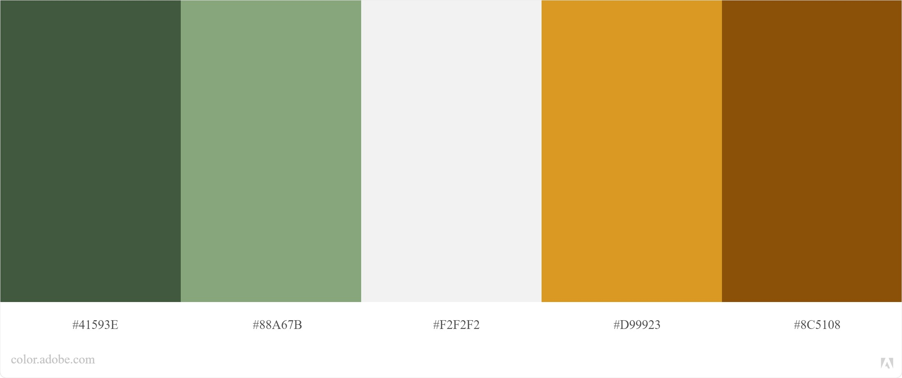

Collage
As a project in my graphic design class, SI 320, I was tasked with creating a collage of floral imagery and typography. the goal was to find a floral illustration, study the meaning of the flower chosen, pick a word that I felt represented the flower and my personal expression well, and then work with layers in photoshop to nestle each letter into the foliage of the floral illustration.
Design
I have always loved lavender - its scent, its subtle feminine power, and its color. The lavender I chose was a slight variation on the most common type of lavender, called spanish lavender, which did not feature the light shade of purple I was expecting, but made for a beautiful and earthy color scheme. I opted for a split complementary color harmony with two shades of green, two shades of yellow-tan, and white. I wanted to emphasize the earthy tones of this color scheme and made the background a deep tan, and made the lettering yellow with a black border. I decided to let the greens shine through the floral illustration alone.
Implementation
I used photoshop on desktop to isolate the background of the floral illustration and remove it. I then moved to photoshop on iPad to fix the edges of each and every leaf so that I could change the color of the background to the deep tan I was imagining. It was by far the most detailed edge isolation I have ever completed, but well worth it. I then utilized the layer features on photoshop to nestle each letter within the leaves of the floral image in a cohesive way.

Feedback & Edits
A large part of my course is recieving feedback from instructors and peers to improve work for the future. The most valuable Feedback
I recieved was to consider making the text larger so that it is more of a focus of the collage, rather than being deeply intertwined
with the leaves. This is a project I intend to come back to in the future to make the image and letters more balanced!